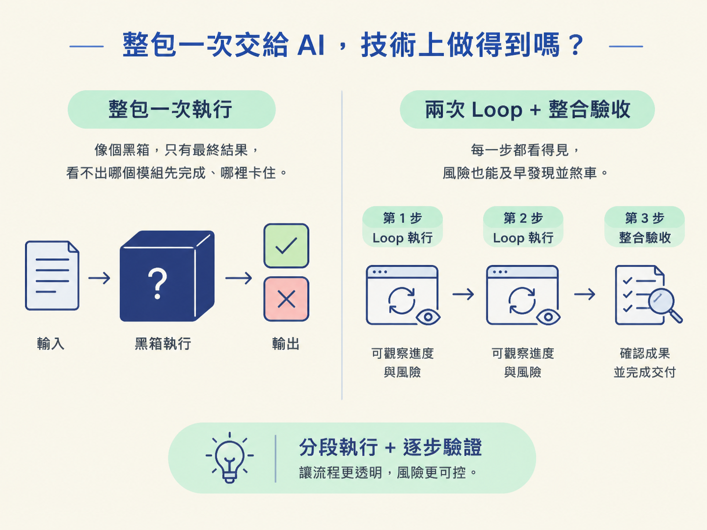
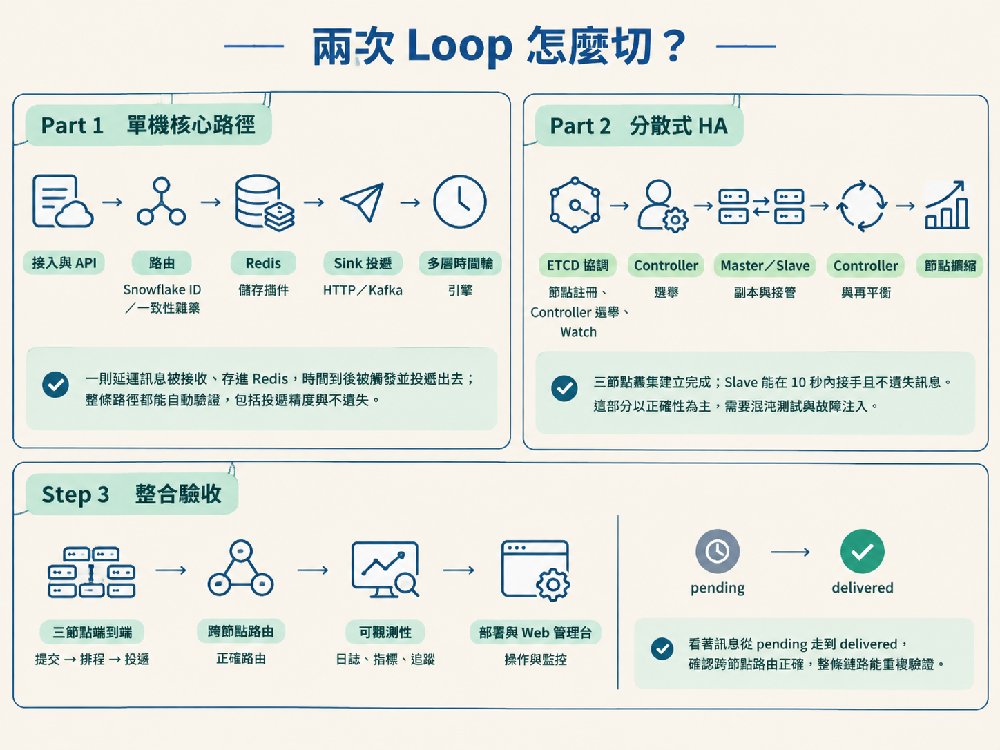
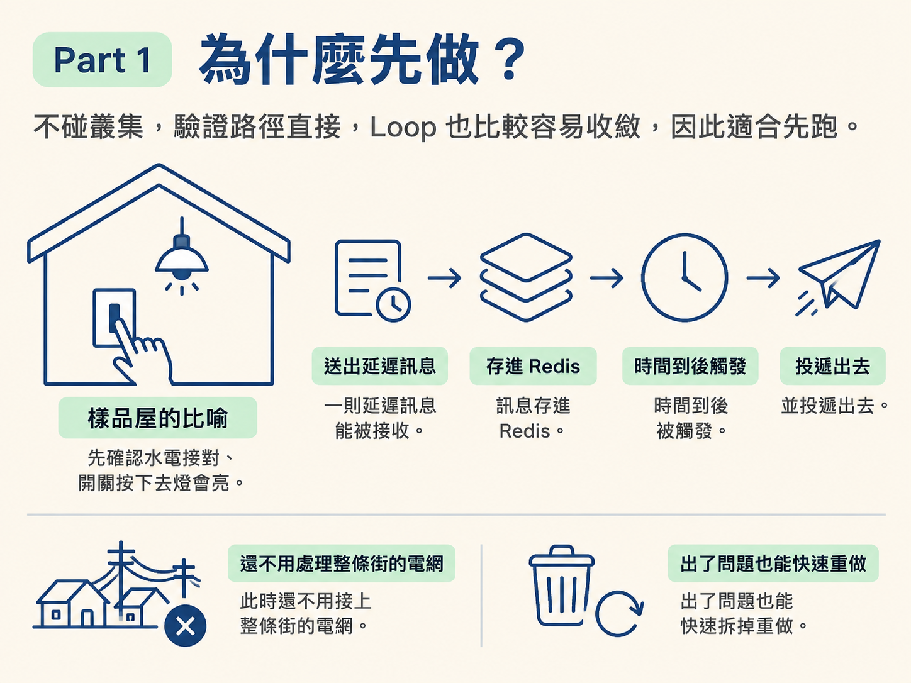
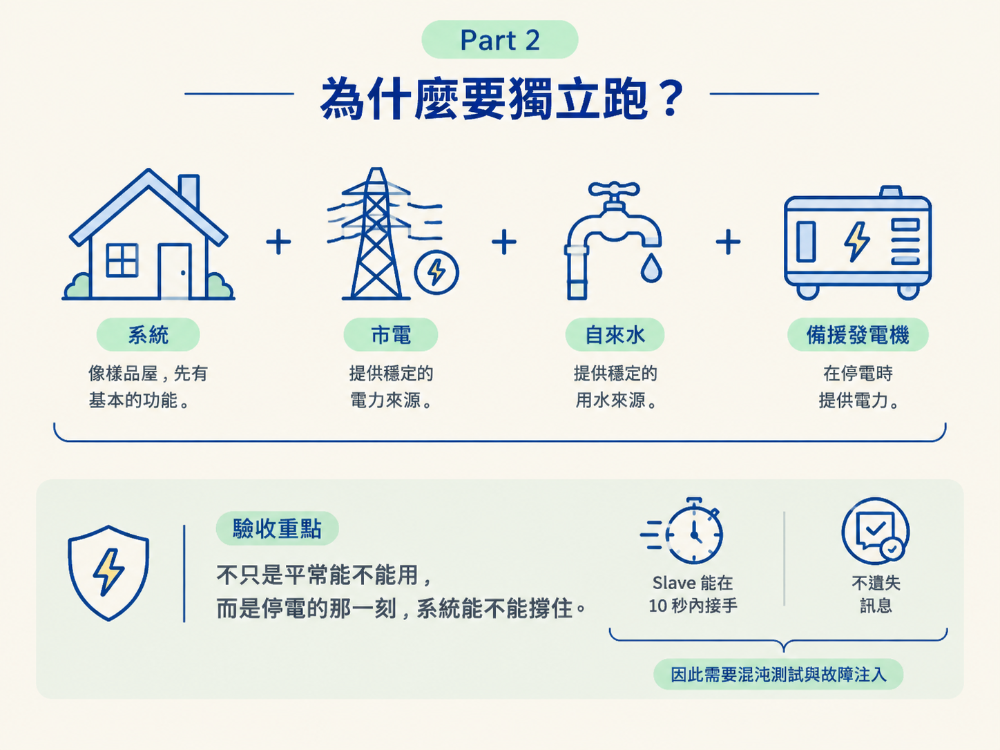
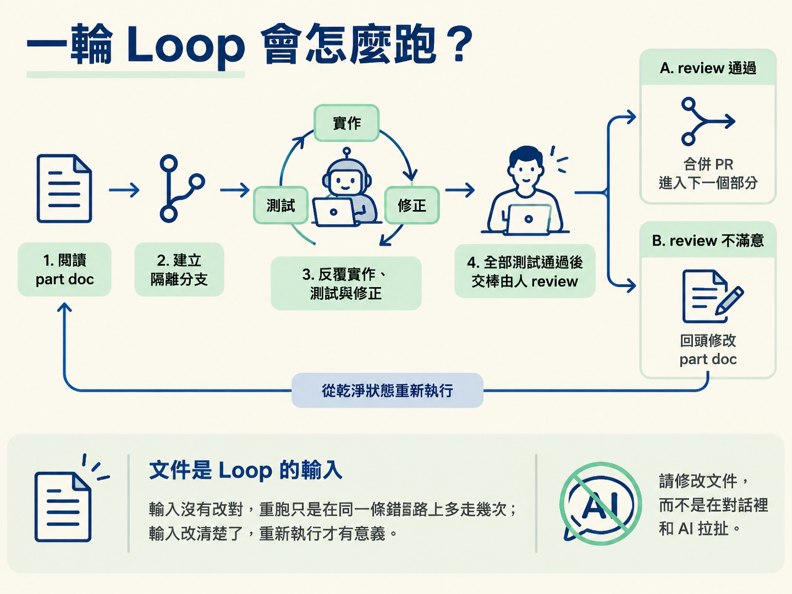

看懂 When 為什麼拆成兩次 Loop，並能說清楚每一部分負責什麼、完成的判準是什麼，以及切分背後的依據。
如果技術方案已經寫清楚，架構、模組邊界和測試都準備好了，When 的確可能一次完成。關鍵在兩件事：模型能不能撐住整段上下文與多個步驟，以及專案本身的耦合和驗證難度有多高。
但「做得到」不代表「適合這樣做」。整包一次執行，最後通常只會看到全綠或全紅；哪個模組先完成、哪裡卡住、錯誤從哪一層開始，都像被蓋上黑布。
教學要讓每一步都看得見、風險也能及早煞車。因此 When 仍然完整使用 Loop 模型，但拆成兩次執行，再加上第三步整合驗收。

所以，分兩次是教學節奏的選擇，不是技術上的限制。在真實工程裡，只要團隊願意承擔一次驗證的範圍，兩次也可以合併成一次。
切分依據不是哪個技術聽起來更酷，而是可驗證性與風險：先處理容易確認的核心路徑，再處理最難模擬、出錯代價也最高的分散式行為。
| 階段 | 範圍 | 完成時要看見什麼 |
|---|---|---|
| Part 1：單機核心路徑 | 接入層與 API、路由（Snowflake ID 與一致性雜湊）、Redis 儲存插件、Sink 投遞（HTTP／Kafka）、多層時間輪引擎 | 一則延遲訊息被接收、存進 Redis，時間到後被觸發並投遞出去；整條路徑都能自動驗證，包括投遞精度與不遺失 |
| Part 2：分散式 HA | ETCD 協調（節點註冊、Controller 選舉、Watch）、Master／Slave 副本與接管、Controller 與再平衡、節點擴縮 | 三節點叢集建立完成；Slave 能在 10 秒內接手且不遺失訊息。這部分以正確性為主，需要混沌測試與故障注入 |
| 第三步：整合驗收 | 用整體 Harness 串起兩部分：三節點端到端的提交 → 排程 → 投遞、跨節點路由、可觀測性、部署與 Web 管理台 | 看著訊息從 pending 走到 delivered，確認跨節點路由正確，整條鏈路能重複驗證 |

因為核心路徑必須先正確，分散式問題才值得討論。如果訊息沒有準時觸發，或根本沒有正確寫入 Redis，這時候去驗證選舉、副本與接管，只是在錯誤的地基上加蓋。
Part 1 不碰叢集，驗證路徑直接，Loop 也比較容易收斂，因此適合先跑。可以把它想成樣品屋：先確認水電接對、開關按下去燈會亮。這時還不用處理整條街的電網，出了問題也能快速拆掉重做。

分散式正確性是 When 最難、風險也最高的部分。它的麻煩在於：系統平常運作時，測試可能一直是綠的；真正的錯誤，往往只在節點剛好於關鍵時刻故障時出現。
因此，這部分不能和核心路徑混在同一輪驗證。它需要自己的測試策略，以及專門針對故障的驗收方式。
如果 Part 1 是樣品屋，Part 2 就是把房子接上市電、自來水，再裝上備援發電機。驗收重點不只是「平常能不能用」，而是「停電的那一刻，系統能不能撐住」。

兩個部分各自套用同一套循環：
交棒後有兩條路。
第一條是出口 A：review 通過，合併 PR，進入下一個部分。
第二條是出口 B：review 不滿意，回頭修改 part doc，再從乾淨狀態重新執行。這裡的關鍵是：不滿意時要修的是文件，不是在對話裡一直和 AI 拉扯。
文件是 Loop 的輸入。輸入沒有改對，重跑只是在同一條錯路上多走幾次；輸入改清楚了，重新執行才有意義。

切好階段後，還要決定每個模組由誰負責。判準一樣是可驗證性。
| 交給 Loop | 由人主導 |
|---|---|
| 多層時間輪演算法、一致性雜湊、序列化、HTTP／gRPC 介面、參數驗證、Sink 插件、Redis key 設計 | 接管正確性、Master／Slave 副本一致性、選舉與腦裂處理 |
判準可以濃縮成一句話：便宜、明確，而且能自動驗證的工作，交給 Loop；難以驗證、出錯代價又高的部分，由人先決定方案，Loop 再協助實作。
如果把這條線畫錯，代價通常比自己動手寫還高。Part 1 的終點，是一條真的能自動驗證的單機核心路徑；Part 2 的終點，則是能在故障情境下做出正確接管決定的分散式系統。